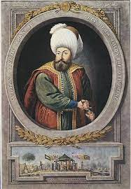

عزيزي القارئ هذه المعلومات من مصادر موثوفة وأخذناها من كتاب الدولة العثمانية المجهولة من تأليف من تأليف أحمد آق كوندز وسعيد أوزتوك ننصحكم بعدم زيارة أي موقع إلا بالتحقق من مصدر المعلومات اللتي قدمها
الدولة العثمانية المجهولة هو كتاب مهم جدا يحكي عن اخر خلافة اسلامية وهي الدولة العثمانية ويحكي عن قوتها وسيطرتها على عديد من الدول الاخرى ومعاركها مع الامبراطورية البيزنطية و روسيا القيصرية و بريطانيا و فرنسا فلابد عزيزي القارئ ان نفتخر بتاريخنا الاسلامي ونفتخر بأن المسلمين قد حكموا جزء كبير من الكره الارضية من الاندلس عند اسبانيا وفرنسا غربا حتا الصين شرقا. قرائة ممتعة بأذن الله
أهم الشخصيات : عثمان بن ارطغرل , سليم الثاني وسليمان القانوني
الدولة العثمانية:
البداية (1299 - 1453):
تأسست الدولة العثمانية على يد عثمان بن أرطغرل في عام 1299.
ارتبطت بتوسعاتها واستيلاءها على المناطق الحدودية.
أحداث بارزة: فتح القسطنطينية عام 1453.
التوسع والاستقرار (1453 - 1683):
توسعت الدولة لتشمل شمال أفريقيا وشرق أوروبا والشرق الأوسط.
عهد السلطان سليمان القانوني شهدت ذروة القوة العثمانية.
تراجع القوة (1683 - 1922):
هُزِمَت في معركة فيينا عام 1683، بداية تراجع الإمبراطورية.
الإصلاحات الهلسنكية في القرن التاسع عشر حاولت إعادة هيكلة الدولة.
السقوط والانهيار (1922):
انهارت الدولة العثمانية مع نهاية الحرب العالمية الأولى.
تأسيس الحكومة التركية الحديثة بقيادة مصطفى كمال أتاتورك.
رسمياً انتهاء الدولة العثمانية عام 1922.
أهم المعارك :
الدولة العثمانية شهدت العديد من المعارك الهامة والناجحة على مر تاريخها. إليك بعض أهم المعارك التي انتصرت فيها الدولة العثمانية:
معركة مراد الأول في كوسوفو (1389):
كانت معركة هامة ضد الصرب، وانتهت بفوز العثمانيين رغم مقتل السلطان مراد الأول.
فتح القسطنطينية (1453):
معركة تاريخية أسفرت عن سقوط القسطنطينية في يد العثمانيين بقيادة السلطان محمد الفاتح.
معركة ملكوفا (1448):
انتصار العثمانيين على القوات الأوروبية الموحدة، مما زاد من تأثيرهم في المنطقة.
معركة مارج دابق (1514):
انتصار السلطان سليمان القانوني على الصفويين، مما أضافت المزيد من الأراضي إلى الإمبراطورية العثمانية.
معركة ليبانتو (1571):
انتصار الأسطول العثماني في المتوسط على الأساطيل الإسبانية والبابوية والفينيقية.
معركة كارلوفيتس (1664):
انتصار العثمانيين على النمسا وحلفائها، مما أعطى الدولة العثمانية تفوقًا في المنطقة.
معركة البلقان (1912-1913):
الانتصار العثماني في المعارك البلقانية لكنها لم تمنع بالكامل تفكك الإمبراطورية.